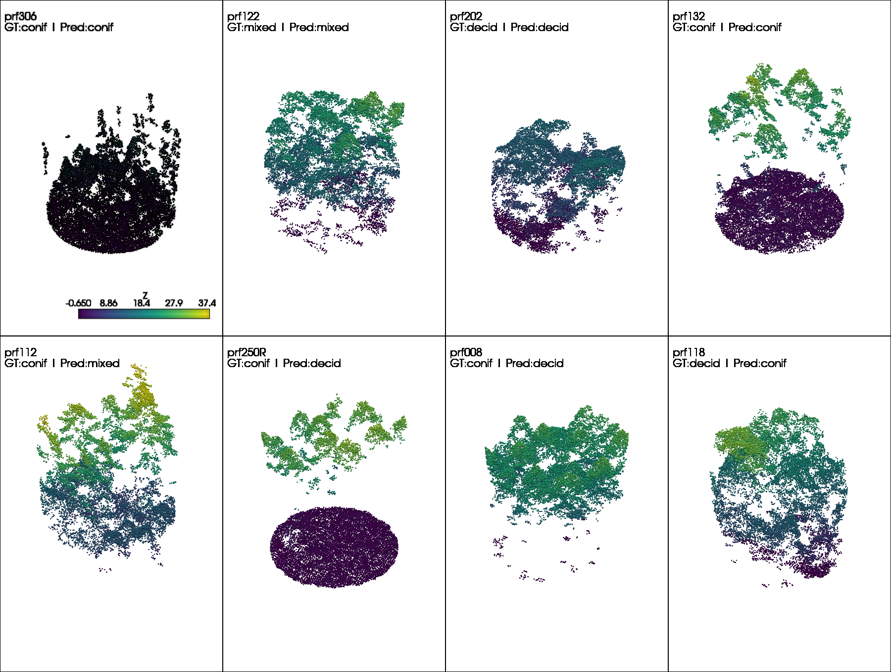

Evaluation of Deep Learning Derived Forest Inventory Predictions
This section details how to interpret the results from the final test run and how to use the trained model effectively.
Evaluating Deep Learning Predictions
Evaluation goes beyond just logging the final loss. It requires inspecting the raw outputs and ensuring they make sense in the context of the problem.
Prediction vs. Target: The core of evaluation is comparing the model’s output (raw logits or predicted values) against the ground truth. This is handled within the on_test_epoch_end hook, where raw predictions are aggregated.
Post-processing: For classification, raw logits must be converted to class indices (e.g., using np.argmax(all_pred, axis=1)) before calculating metrics like accuracy or confusion matrices.
Key Evaluation Metrics
The choice of metric depends entirely on the task type, as implemented in your on_test_epoch_end hook:
Classification Metrics
Instance Accuracy: The proportion of correctly classified individual samples (points or objects).
Class Accuracy (Mean Class Accuracy): The average accuracy across all possible classes. This is vital for imbalanced datasets, as it prevents the model from being judged solely by its performance on the most frequent class.
Confusion Matrix: A table that visualizes the performance of the classification model, where each row represents the instances in an actual class, and each column represents the instances in a predicted class.
Regression Metrics
Root Mean Squared Error (RMSE): Measures the average magnitude of the errors. Since the errors are squared before being averaged, RMSE gives a relatively high weight to large errors.
R-squared (\(R^2\)): Represents the proportion of the variance for a dependent variable that’s explained by the independent variable(s) in a regression model. \(R^2\) ranges from \(0\) to \(1\), with \(1\) being a perfect fit.
Prediction results
Examples of Evaluation Metrics and Plotting Figures
Visualizing the results is often more informative than numerical logs alone.
Qualitative Visualization: For point cloud applications, visualize the point cloud data colored by the model’s predicted label versus the true label to identify spatial regions where the model struggles.
import pandas as pdimport numpy as npimport pyvista as pvfrom pathlib import Pathimport randomCLASS_MAP = {0: "conif",1: "decid",2: "mixed"}# Load predictionsdf = pd.read_csv("src\pretrained_ckpt\peta_cls_dgcnn_bs8_lre3\checkpoints\predictions.csv")# Folder with point cloudspc_dir = Path("src\data\petawawa\plot_point_clouds") # contains prf003.npy, etcdf["correct"] = df.dom_sp_type == df.pred_dom_sp_typeprint("Correct:", df.correct.sum())print("Incorrect:", (~df.correct).sum())correct_df, wrong_df = sample_grid(df, n_per_row=4)visualize_z_grid(correct_df, wrong_df, pc_dir, save_path="images/04_eval/cls_output.png")
Result:
Correct: 33
Incorrect: 4

correct
BIOMASS
Classification
How to use the pre-trained model
Step 1: We first define the predict step in pl.LightningModule to output the predictions
# --- Prediction / Inference In ---def predict_step(self, batch, batch_idx, dataloader_idx=0):""" Used for generating raw output/predictions on unseen data. Does not calculate loss or metrics. Runs when trainer.predict() is called. """ points, target, pid = batch # Transpose [B, N, C] -> [B, C, N] and enforce float32 points = points.transpose(2, 1).float() # 1. Forward Pass# Assuming self(points) returns (pred, trans_feat), we only return the prediction (pred) pred, _ =self(points)ifself.task =='classification': pred = torch.argmax(pred, dim=1)# Return only the raw prediction tensor for the userreturn {"plot_id": pid,"pred": pred.detach().cpu(),"gt": target.detach().cpu() }
Code
# ... same as training for configs loading, datamodule, modelmodule, trainer initialize# 4. Run predictionprint("Running prediction...")outputs = trainer.predict(model, dataloaders=data_module)# 5. Parse outputs → CSVrecords = []if task =="classification":for o in outputs:for pid, gt, pred inzip( o["plot_id"], o["gt"], o["pred"] ): records.append({"plot_id": pid,"dom_sp_type": int(gt.item()),"pred_dom_sp_type": int(pred.item()) })else: # regressionfor o in outputs:for pid, gt, pred inzip( o["plot_id"], o["gt"], o["pred"] ): records.append({"plot_id": pid,"total_agb_z": float(gt.item()),"total_agb_z_pred": float(pred.item()) })df = pd.DataFrame(records)df.to_csv(os.path.join(os.path.dirname(args.ckpt_path), args.out_csv), index=False)print(f"Predictions saved to: {os.path.join(os.path.dirname(args.ckpt_path), args.out_csv)}")